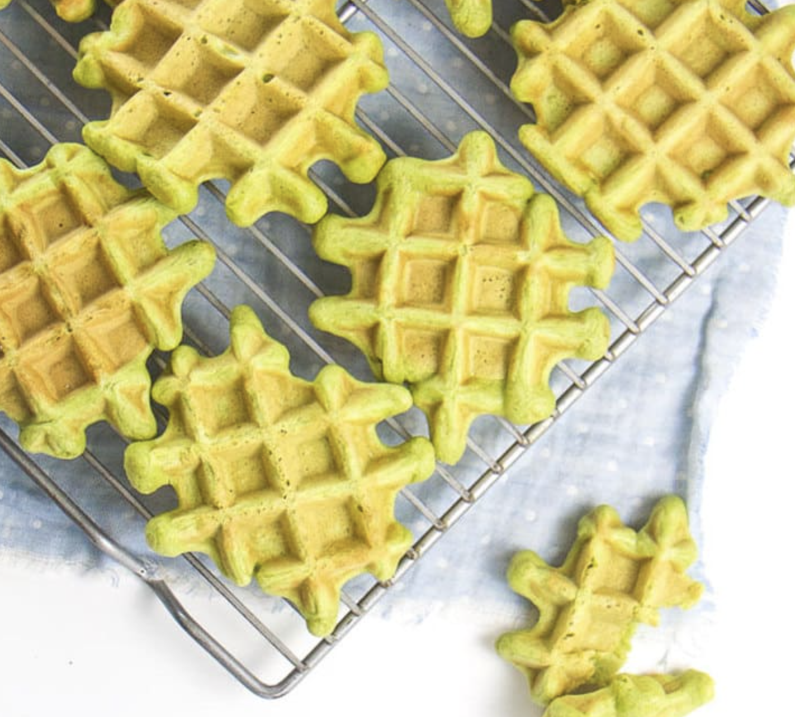

Baby Spinach Waffles

Description
These spinach waffles are easy to make, freezer-friendly, and a great way to sneak some veggies into your picky baby or toddler's diet.
Ingredients
- 2 cups whole wheat flour
- 1 tbsp baking powder
- 1 tsp cinnamon
- 1/4 tsp salt
- 2 eggs
- 1 cup milk
- 1/4 cup olive oil
- 1/4 cup applesauce
- 1/2 tsp vanilla extract
- 1 cup spinach
Steps
- Preheat waffle iron on medium.
- In a large bowl, stir together flour, baking powder, cinnamon, and salt.
- Blend eggs, milk, oil, applesauce, vanilla extract, and spinach in a blender. Make sure to completely blend spinach.
- Add spinach mixture to dry ingredients bowl and combine.
- Pour waffle batter into waffle iron in small increments, cooking until slightly golden on the edges.
- Serve or store in the fridge or freezer for later.